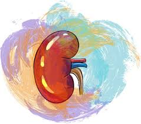
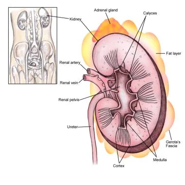
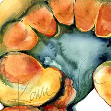
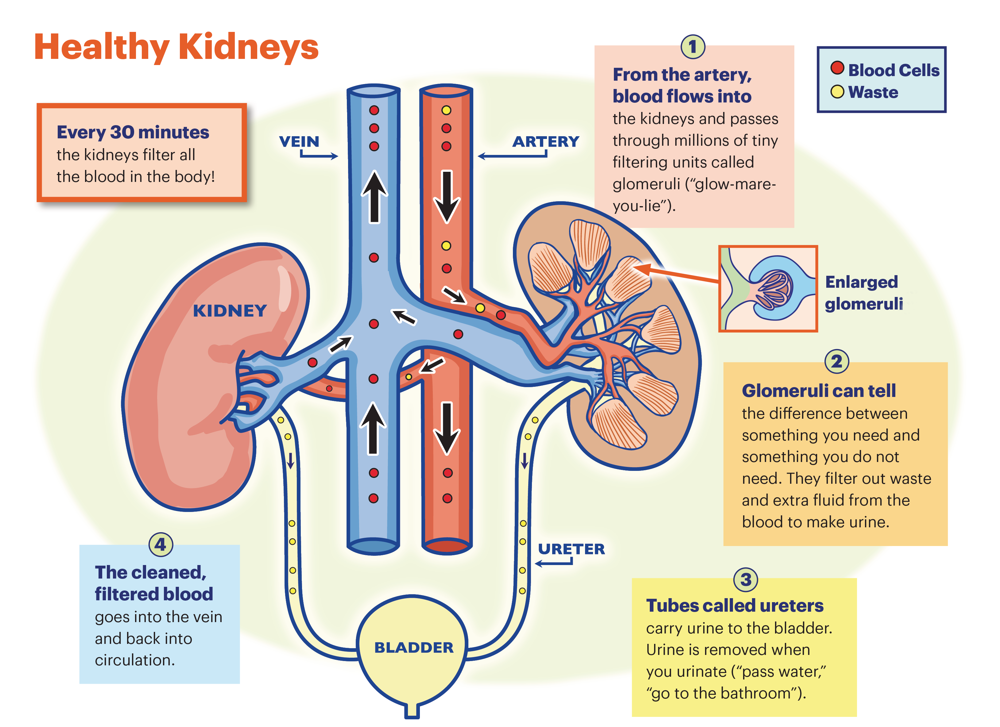

The kidneys are paired retroperitoneal structures that are normally located between the transverse processes of T12-L3 vertebrae, with the left kidney typically somewhat more superior in position than the right (reflecting the relationship of the latter to the liver). Each kidney has a bean-shaped structure, with a medial concavity (the hilum) and lateral convexity. The upper poles are normally oriented more medially and posteriorly than the lower poles. They are covered by a dense, elastic connective tissue sheath, the renal fascia (Gerota's fascia). It envelops each kidney and suprarenal gland. A layer of surrounding perirenal also surrounds these structures. The fat layer is the thickest at the renal borders and extends into the renal sinus at the hilum of the kidney.
The kidneys serve important functions, including filtration and excretion of metabolic waste products (urea and ammonium); regulation of necessary electrolytes, fluid, and acid-base balance; and stimulation of red blood cell production. They also serve to regulate blood pressure via the renin-angiotensin-aldosterone system, controlling reabsorption of water and maintaining intravascular volume. The kidneys also reabsorb glucose and amino acids and have hormonal functions via erythropoietin, calcitriol, and vitamin D activation.

The proximal tubule has been identified as having a stronger negative charge than previously thought, influencing nanoparticle interactions for drug delivery applications. The kidneys' role in hypertension involves not only the renin-angiotensin-aldosterone system (RAAS) but also immune modulation through sodium handling and proinflammatory pathways. The kidney anatomy is shown in the image below:

Functions
Most people are born with two kidneys, each about the size of an adult fist, on either side of the spine just below the rib cage. Although small, your kidneys perform many complex and vital functions that keep the rest of the body in balance.
For example, kidneys:
Help remove waste and excess fluid from your body
Filter the blood, keeping some compounds while removing others
Help make red blood cells
Balance important vitamins and minerals
Help maintain your blood pressure
Keep bones healthy

Filtering Process
Your kidneys are on either side of your spine, just below your rib cage. Inside each kidney are up to a million tiny parts called nephrons that help filter (clean) your blood. Once the kidneys filter the blood, the cleaned blood is sent back into the body, and the waste materials, now in the form of urine (pee), are moved into the bladder. The following is the filtering process for healthy kidneys – step-by-step:

Blood enters the kidneys through an artery from the heart
Blood is cleaned by passing through millions of tiny blood filters
Waste material passes through the ureter and is stored in the bladder as urine
Newly cleaned blood returns to the bloodstream through veins
When the bladder is full, urine leaves the body through the urethra